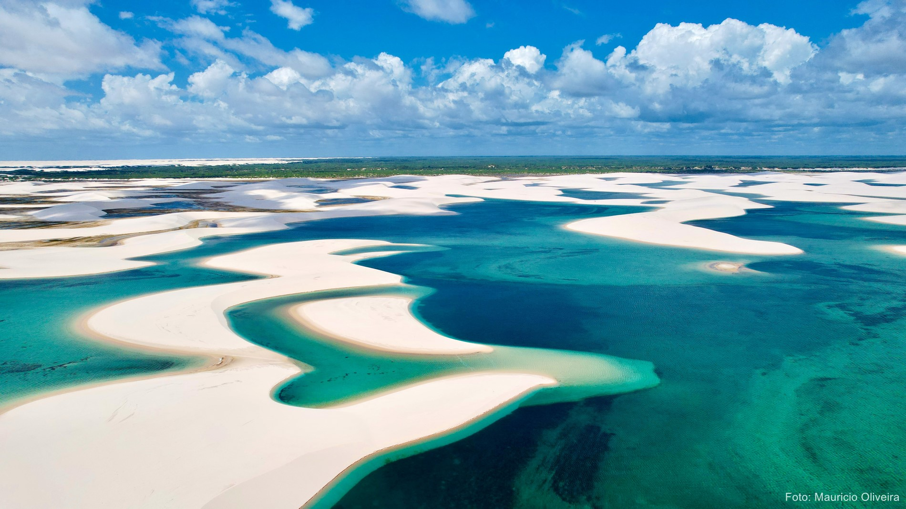

Lençóis Maranhenses
O Parque Nacional dos Lençóis Maranhenses é uma das paisagens mais impressionantes do Brasil, com dunas de areia branca e lagoas de água cristalina.
O Parque Nacional dos Lençóis Maranhenses é uma das paisagens mais impressionantes do Brasil, com dunas de areia branca e lagoas de água cristalina.
A capital maranhense, conhecida como "Ilha do Amor", tem um centro histórico com arquitetura colonial portuguesa, declarado Patrimônio Cultural da Humanidade pela UNESCO.
Cidade histórica com ruínas de mansões coloniais e um centro de lançamento de foguetes.